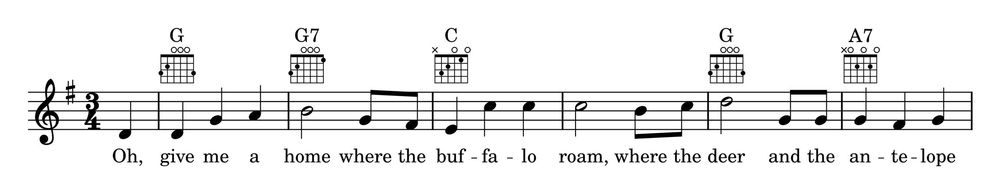
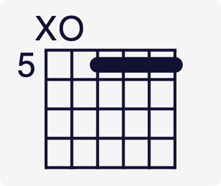
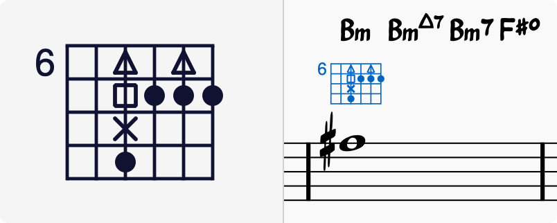

Fretboard (or chord) diagrams usually appear above the staff on lead sheets and piano scores.

They are commonly used for guitar chords, but MuseScore Studio allows you to create and customize diagrams for any stringed instrument.
MuseScore Studio comes with a library of common fretboard diagrams which can be accessed by first creating chord symbols and then adding fretboard diagrams to them.
Adding a fretboard diagram to your score
The quickest way to add a fretboard diagram to your score is the following:
{% stepper %}
{% step %}
Press `Ctrl` + `K` to enter a chord symbol at a selected nore or rest (Mac: `Cmd` + `K`).
{% endstep %}
{% step %}
Type in any chord name.
{% endstep %}
{% step %}
Right-click on the chord symbol and select **Add fretboard diagram**.
A fretboard diagram corresponding to the chord symbol will automatically populate in the score.
{% endstep %}
{% endstepper %}
You can also use any of these other methods:
Select one or more chord symbols in the score, then either:
In the Properties panel, click the Add fretboard diagram button in the Chord symbol section.
Set a keyboard shortcut for the Add fretboard diagram action in Preferences -> Shortcuts and run it.
Select one or more notes, then click a fretboard diagram in Palettes ->Fretboard diagrams.
Drag and drop a fretboard diagram from a palette onto a note.
To create a grid of fretboard diagrams summarizing every chord symbol in your score, see [fretboard-diagram-legend.md](%1).
How do chord symbols and fretboard diagrams interact?
Fretboard diagrams and chord symbols on the same beat position and staff are considered linked.
Autofilling fretboard diagrams
When you change the name of a chord in a chord symbol, its linked fretboard diagram will update automatically to match it.
Once you customize a diagram, to prevent it from being overwritten, it won't automatically update when you edit its linked chord symbol. If you never want fretboard diagrams to change when editing chord symbols, go to Preferences -> Note input -> Fretboard diagrams and turn on 'Never autofill fretboard diagrams when changing chord symbols'.
Placement
You can control the default distance between chord symbols and fretboard diagrams using the 'Minimum space from fretboard diagram' property found in Format -> Style… -> Chord symbols -> Positioning. You can further control individual chord symbol and fretboard diagram positioning using their Appearance properties.
A linked chord symbol can be deleted independently of its fretboard diagram and vice versa. You can also add a new linked chord symbol to a fretboard diagram by right-clicking on the diagram and choosing Add chord symbol, or using the Ctrl + K shortcut.
Neither fretboard diagrams nor their linked chord symbols are affected by [transposition](%1) commands.
Fretboard diagrams palette
The Fretboard diagrams palette provides some basic fretboard diagrams to get started with (major, minor, and 7th chords). To see the associated chord name, hover the cursor over a diagram.
When any fretboard diagram from Palettes is added to the score, a chord symbol is automatically placed above it.
The Blank diagram element lets you add a blank diagram, though when placed in the score you can immediately type in a chord symbol to fill the diagram automatically.
You can save any in-score fretboard diagram to any palette by holding Shift + Ctrl (Mac: Shift + Cmd) and dragging the diagram from the score into the desired palette.
Customizing a fretboard diagram
To make your own custom fretboard diagram, or edit one that's been automatically filled:
Add the Blank diagram from the Fretboard diagrams palette (or select a diagram that's already in your score).
Open the Properties panel (toggle F8).
Edit the properties in the Settings tab as required.
In the General tab, use the interactive fretboard diagram editor to customize the diagram as described below:
* Finger dots (markers)
To add a dot: Click on a fret. The shape of the dot is determined by the Marker type setting. If Multiple dots is checked you can add more than one dot per string.
To delete a dot: Click on an existing dot/marker.
Barrés
To add a barré: Hold Shift and click on the fret where you want the barré to begin. Or, with Barré checked, simply click on the fret.

* To add a partial barré ending before first string: Create a standard barré first (see previous instruction). Then shorten it by Shift clicking (or clicking with Barré checked) where you'd like the barré to end.
* To delete a barré: Hold Shift and click on the 'top' of the barré (its left end). Or, with Barré checked, just click on the 'top'.
* To create multiple barrés: Repeat the above steps at different fret positions.
* Open / Mute strings: Click just above each string in the diagram to toggle between:
* No symbol
* Open (O)
* Mute/Unplayed (X)
See also Fretboard diagram properties (below).
Fretboard diagram properties
When a fretboard diagram is selected, its properties are viewable in the properties-panel.md as follows:
General (tab)
At the bottom of the Fretboard diagram properties section is an interactive editor of the selected fretboard diagram. The General tab contains tools for using the interactive editor, though the editor is also functional in the Settings tab.
Barré: Check on if you want to add or delete finger barrés with one click on the fretboard diagram editor below. Barrés can also be added by holding Shift while clicking instead.
Multiple dots: If unchecked you can only add one finger dot per string. If checked you can add multiple dots per string.
Marker type: When you click on the fretboard diagram editor, the shape of the dot added is determined by this property. The default shape is a round black dot, which suffices for standard chord (and scale) diagrams. A cross, square and triangle are provided to enable other notation styles.
Show fingerings: When turned on, you can specify a number to indicate which finger should be used to fret each string.
Clear: Clears everything, leaving a blank fretboard.
Settings (tab)
Scale: Makes the fretboard diagram larger or smaller.
Strings: The number of strings to be displayed.
Visible frets: Specifies the number of displayed frets (these are added or removed from the bottom of the diagram, or the right if oriented horizontally)
Fret number: Specifies the starting fret of the diagram, displayed next to the topmost fret (or the leftmost fret, if oriented horizontally)
Show nut: Can be turned off to hide the emboldened line at the top of diagrams. Applies to first position diagrams only.
Orientation: Vertical draws diagrams top-to-bottom; Horizontal draws them left-to-right.
Position: Positions the diagram above or below the staff.
Exclude from vertical alignment: Turn on to exclude this fretboard diagram from automatic alignment of chord symbols and fretboard diagrams on the same staff. This checkbox syncs to the same checkbox in the properties of chord symbols linked to fretboard diagrams.
Appearance
Edit a fretboard diagram's colour, offset, and more by clicking on Appearance in the Properties panel. See #appearance-settings for more details.
Fretboard diagram style
Global fretboard diagram properties can be set in Format -> Style… -> Fretboard diagrams:
Alternative notation styles
Some arrangers and educators have extended the basic form of the fretboard diagram, incorporating finger dots of various shapes (see Marker type), and allowing multiple dots per string. Jazz guitarist Ted Greene and his successors are notable examples.
Multi-dot notation style
With this approach, the chord signified by round dots on the fretboard diagram is played first (see image below). Then, on successive beats marked by chord symbols, the chord fingering is modified to incorporate other shapes on the same diagram. The usual playing order is: dot -> X -> square -> delta, but this can vary.

Optional-note notation style
Another use of multiple dots per string allows other symbols to show optional notes, rather than delayed notes: